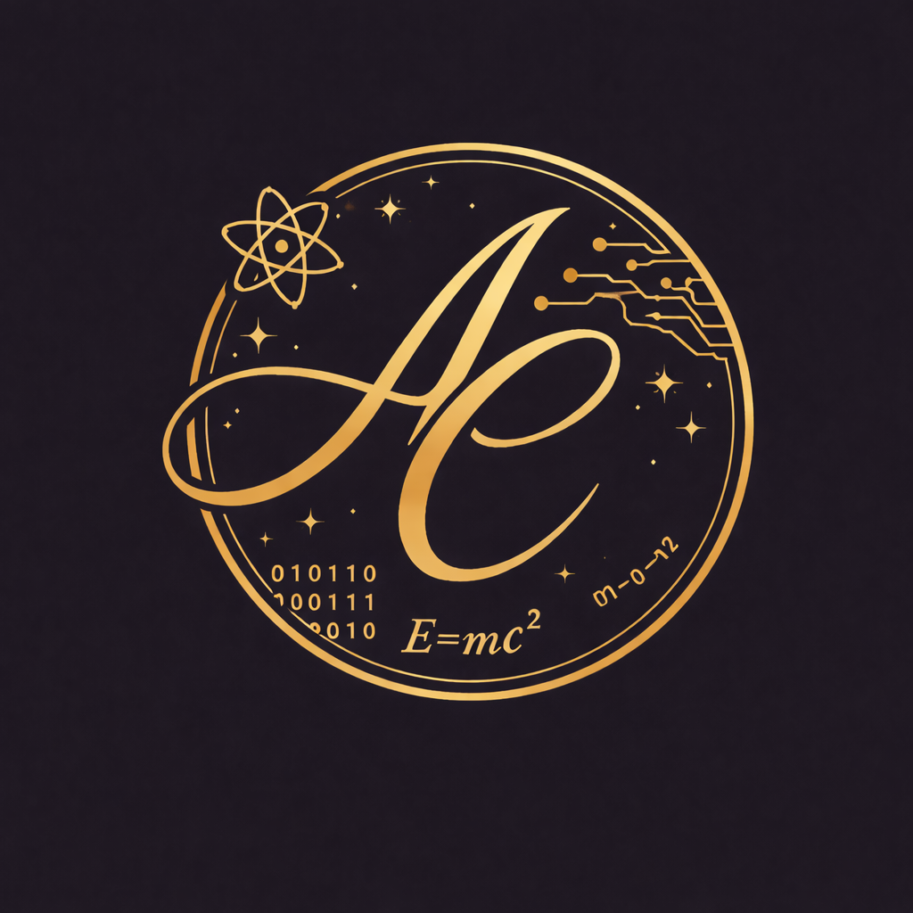
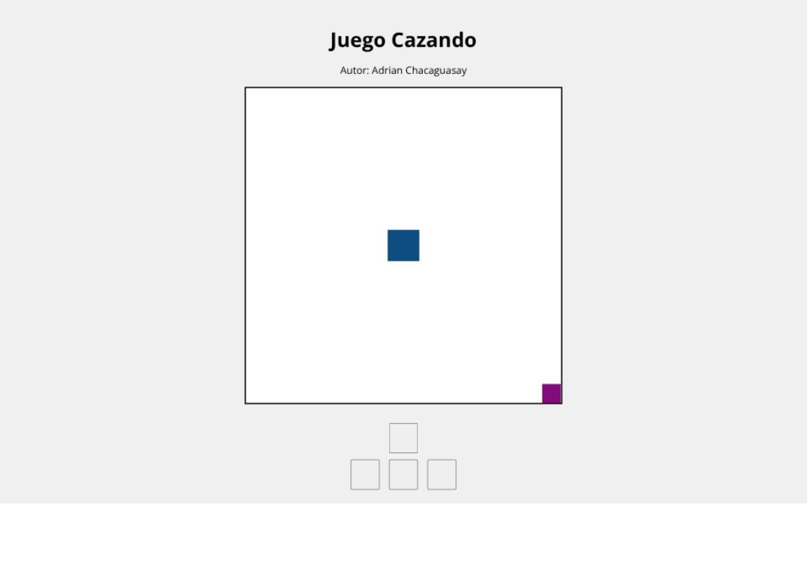
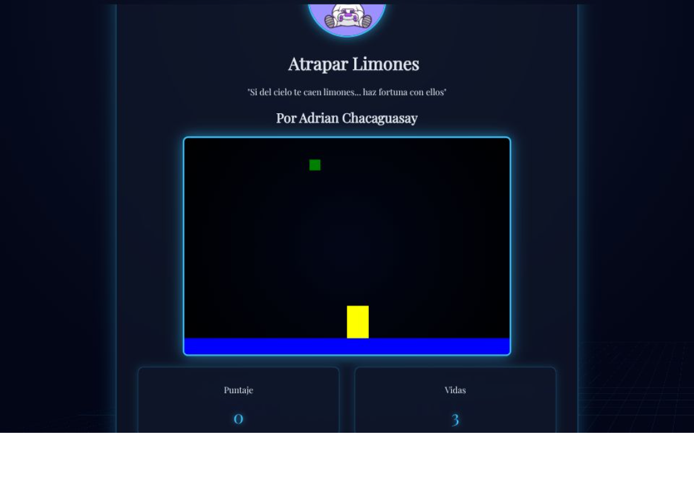
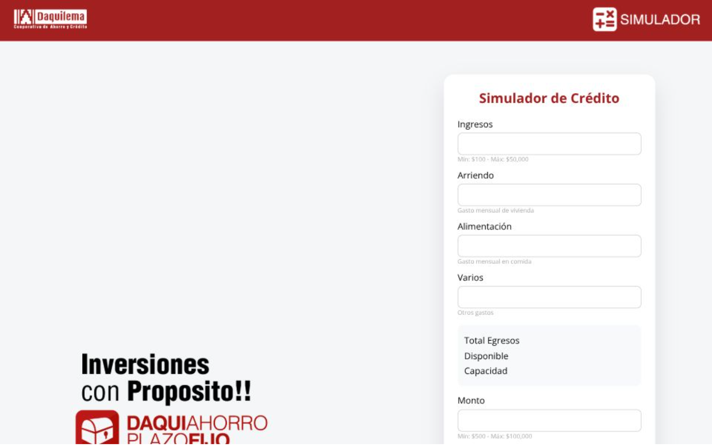

Autor: Adrian Chacaguasay (A.CH)

🎯 JUEGO CAZANDOJuego interactivo desarrollado en HTML, JavaScript y CSS. Diviértete atrapando la comida mientras pones a prueba tu velocidad y reflejos. Mejora tu puntuación y domina cada nivel.

🍋 JUEGO ATRAPANDO LIMONESJuego divertido creado con HTML, JavaScript y CSS. Atrapa los limones y crea la mejor limonada mientras mejoras tu coordinación y velocidad.

💳 SIMULADOR DE CRÉDITOSimula tu crédito y solicítalo aquí de manera rápida y sencilla. Calcula tu capacidad de pago, ajusta montos y plazos en tiempo real y toma decisiones financieras informadas con una experiencia interactiva.